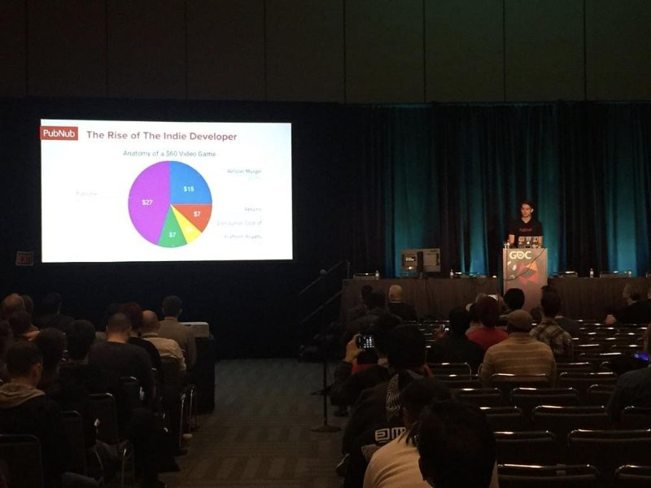

Eli Lynch
Hello, I'm Eli Lynch, a Political Science major with a minor in Public Policy at the University of California, Riverside, where I expect to earn my Bachelor of Arts in June 2028. I am interested in how laws and public policy are made, argued and carried out, and in how they shape the lives of the people they affect. My coursework has included the analysis of public policy in political spheres, American politics and the effects of contemporary polarization, and the effective use of policy incentives in economic systems. These classes have given me a framework for thinking about government, and my work experience has given me the chance to see those ideas in practice.
Much of that hands-on experience comes from my time as a Legal Secretary at McMahon Lynch Law Firm in Anaheim, where I worked from 2023 to 2026. There I conducted post-claim investigation, legal research and plaintiff discovery on more than 30 cases. I drafted form interrogatories, special interrogatories and requests for production of documents, and I supported attorneys with case file organization and trial preparation. Working inside a law firm taught me how much careful preparation stands behind every case, and it showed me how important accuracy, organization and confidentiality are in legal work.
Alongside my legal work, I served as a Media Intern for the Knights of Columbus, working remotely from 2025 to 2026. In that role I wrote and designed more than 20 infographic newsletters that were distributed to regional branches. I sharpened my skills in Canva, Adobe Photoshop, Acrobat and the wider Creative Cloud, and I coordinated with several departments to gather the information each publication needed. This experience taught me how to turn complicated information into something clear, visual and easy for readers to understand.
Today I work as a Student Worker in the UC Riverside Office of Admissions. I review and process student transcripts according to office standards, respond to callers' questions, and provide assistance wherever it is needed. I also handle a range of administrative tasks that keep the office running smoothly. The role has strengthened my communication skills and my ability to stay organized while working with a high volume of requests.
Outside of work and class, I am an active brother of Kappa Alpha Pi, UC Riverside's pre-law and government fraternity. Through mock trial exercises, LSAT preparation workshops and case brief sessions, I continue to develop my legal reasoning and advocacy skills. I have also built professional connections by attending networking events and panels with attorneys, judges and law school admissions officers. Giving back is an important part of the fraternity, and I have contributed to our chapter's community service by providing clothing and handwritten cards for Court Appointed Special Advocates (CASA).
Looking ahead, I hope to build on my background in law, policy and communication as I pursue a career in the legal field. I am always glad to connect with people who share these interests, so please feel free to reach out through any of the links below.
Experience
Student Worker
• Review and process transcripts of current university students to supervisor standards
• Respond to caller inquiries and provide assistance as needed
• Handle a range of administrative responsibilities that support office productivity
Legal Secretary
• Conducted post-claim investigation, legal research and plaintiff discovery on over 30 cases
• Drafted form interrogatories, special interrogatories and requests for production of documents
• Organized case files and assisted with trial preparation
Media Intern
• Authored and designed over 20 infographic newsletters distributed to regional branches
• Refined skills in media software such as Canva, Adobe Acrobat and Photoshop
• Communicated with multiple departments to source information for publications
Active Brother
• Developed legal reasoning and advocacy skills through mock trials, LSAT prep workshops and case brief sessions
• Built professional connections at networking events and panels with attorneys, judges and law school admissions officers
• Contributed to chapter community service by providing clothing and cards for Court Appointed Special Advocates (CASA)
Education
University of California, Riverside
Skills
Interrogatories (Form & Special), Requests for Production of Documents, Case Briefing, Legal Research, Discovery Processing, Post-Claim Investigation, Trial Preparation, File Management, Transcript Review, High-Volume Phone Handling
Infographic Design, Newsletter Layout, Visual Asset Creation, Canva, Adobe Photoshop, Lightroom, Firefly, Acrobat, Creative Cloud, Timeslips, Amazon WorkSpace, Microsoft Word, Microsoft Excel
Portfolio

